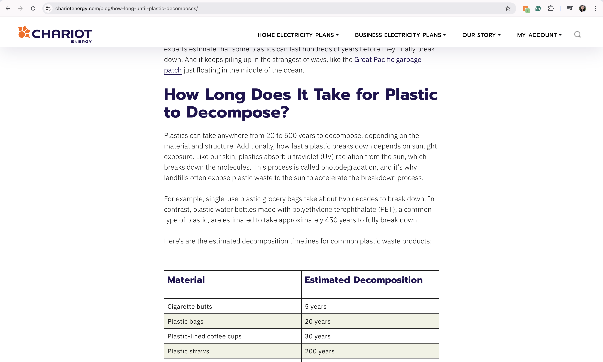

Article on Time Needed to Decompose
"How Long Does It Take Plastic To Decompose?" by Chariot Energy answer common questions that we might have around plastic decomposition aiming to educate the general public. The website is text-heavy without any interactions except the FRQ dropdowns. I also liked that they have a chart of the different materials and years needed to decompose that material. I believe it would also be important to bring solutions to plastic.
